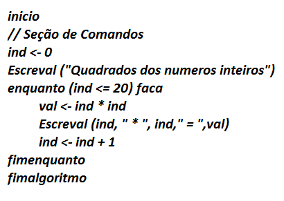
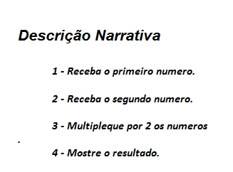
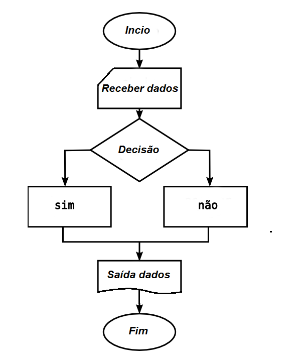
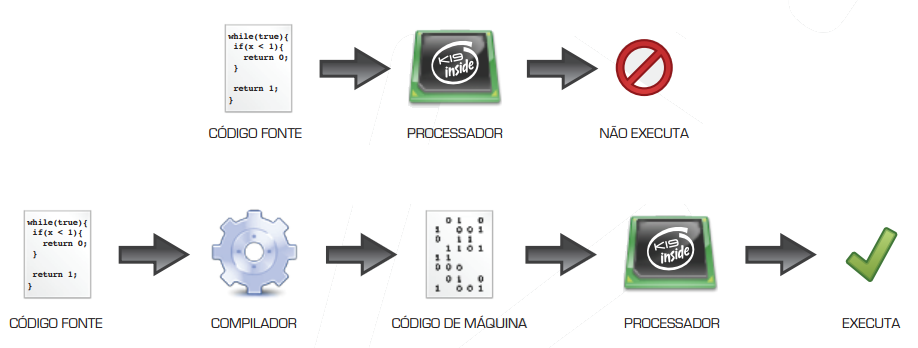
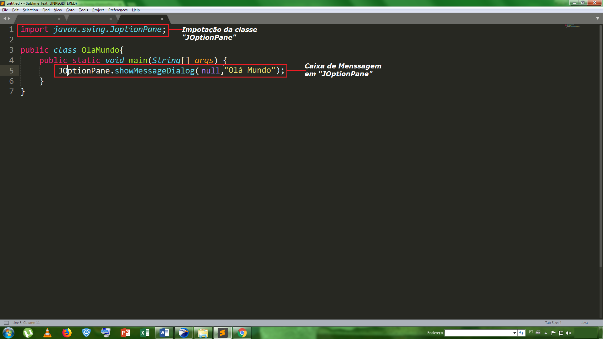

É um pensamento rápido para de resolver um problema ou executar uma tarefa. A lógica de programação são comandos dados ao computador para realizar uma tarefa. Um Algoritmo são sequencias corretas de comandos lógicos, como por exemplo, beber um copo com agua, para realizarmos isso precisa-se seguir uma sequência correta de passos, primeiramente pegar o copo de agua logo após a pegar a garrafa com agua colocar a agua da garrafa no copo e por último beber a agua do copo. Um algoritmo de computador é exatamente a mesma coisa, com o intuito de o computador realizar tarefas esperadas. Um Programa é sequência de algoritmos para realizar uma tarefa em geral.
O pseudocódigo utiliza linguagem estruturada e se assemelha, na forma, a um programa inscrito na linguagem de programação pascal é também chamado de português estruturado. Veja um exemplo abaixo.

A descrição narrativa utiliza linguagem natural para especificar o passos para a realização as tarefas. Isso dá margem as más interpretações e ambiguidades. Veja um exemplo abaixo.

O fluxograma é uma forma universal de representação, pois se utiliza de figuras geométricas para ilustrar os passos a serem seguidos para a resolução dos problemas é chamada também de diagrama de blocos. Veja um exemplo abaixo.

O formato dos comandos que um computador pode executar depende basicamente da arquitetura do seu processador. Como existem diversas arquiteturas diferentes, um mesmo comando pode funcionar em um computador e não funcionar em outro. O formato dos comandos aceitos por um determinado processador define a linguagem de máquina ou código de máquina desse processador. Essa linguagem de máquina é dada por um sistema de numeração a partir de dois números, 0 e 1, conhecidos como código binário.
Como os computadores são capazes de processar apenas o código escrito em linguagem de máquina, existe um programa chamado compilador que faz a codificação da linguagem de programação para a linguagem de máquina. Veja mais na imagem abaixo.
Java é uma linguagem de programação e plataforma computacional, ou seja, além de ser uma linguagem de programação ela é de certa forma uma máquina virtual. Uma maquina virtual são programas especiais que permitem que outros programas possam ser executados em diversas plataformas diferentes. O Java também pode ser definido como um conjunto de utilitários que permitem criar sistemas de software para plataformas diferentes. O Java possui vários componentes, como o JDK (Kit de Desenvolvimento Java) que possui o compilador e o JRE, o JRE (Ambiente de Execução Java) que possui as bibliotecas e o programa de execução, e o JVM (Máquina Virtual Java) que é responsável por gerar o bytecode. O bytecode é um código intermediário executável em diversas plataformas diferentes.
Linha 1 é formada por a declaração da classe "OlaMundo". Linha 2 corresponde à declaração do método main (corpo principal), no qual é iniciada a execução do programa. Se o programa tiver algum argumento na linha de comando, ele será transmitido ao método main, em uma matriz de String, denominada args.
O método main() pode ser acessado por qualquer Classe.
Informa ao compilador que main() não requer a chamada de uma instância desta Classe.
Indica que nada é retornado por main().
Declaração da matriz tipo String, que recebe os parâmetros.
Variável é um espaço reservado na memória RAM do computador. Como o nome diz, seus valores variam de elemento para elemento. As variáveis podem ter valores numéricos ou não numéricos. Variáveis podem ser classificadas por String (sequência de caracteres), double (expressão numérica real), int (expressão numérica inteira) e boolean (expressões lógicas de "verdadeiro" ou "falso").
Uma classe é uma descrição que abstrai um conjunto de objetos com características similares. A classe Scanner de texto simples pode analisar os tipos primitivos e "Strings" usando expressões regulares informadas pelo usuario. Veja a estrutura basica de um Scanner.
JOptionPane é uma classe que possibilita a criação de uma caixa de diálogo padrão que solicita um valor para o usuário ou retorna uma informação. Existem alguns métodos e parâmetros mais utilizados quando se opta pelo JOptionPane, como JOptionPane.showMessageDialog que possibilita uma mensagem ao usuário e temos JOptionPane.showInputDialog que possibilita uma entrada de dados ao programa. A estrutura de um JOptionPane pode ser vista na imagem logo abaixo.
Uma proposição trata-se de uma sentença declarativa, ou seja, algo que será declarado por meio de termos, palavras ou símbolos e cujo conteúdo poderá ser considerado "verdadeiro" ou "falso". Normalmente, as proposições são representadas por letras minúsculas (p, q, r, s, etc) as mais usadas são "p" e "q".
Proposições compostas em que está presente o conectivo "e" são ditas conjunções. Simbolicamente, esse conectivo pode ser representado por "∧". Uma conjunção só será verdadeira, se ambas as proposições componentes forem também verdadeiras. A partir disso podemos montar uma tabela, conceituando comom "tabela lógica".
| p | q | p∧q |
| V | V | V |
| V | F | F |
| F | V | F |
| F | F | F |
Recebe o nome de disjunção, toda proposição composta em que as partes estejam unidas pelo conectivo "ou". Simbolicamente, representaremos esse conectivo por "∨". Uma disjunção será falsa quando as duas partes que a compõem forem ambas falsas! E nos demais casos, a disjunção será verdadeira. Veja na tabela a seguir.
| p | q | p∨q |
| V | V | V |
| V | F | V |
| F | V | V |
| F | F | F |
Para fazer negação basta pôr a palavra "não" antes da sentença, e já a tornamos uma negativa. O símbolo que representa a negação é um sinal de "til" (~), antecedendo a frase. Em uma negação o que é verdadeiro vira falso, e o que é falso vira verdadeiro. Se usarmos uma negação em uma conjunção, logo teremos.
| p | q | ~(p∧q) |
| V | V | F |
| V | F | V |
| F | V | V |
| F | F | V |